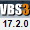
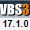
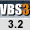
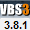
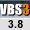
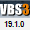
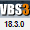
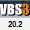

VBS Event Handlers
Introduction
Event Handler Pages
Page:Hendo_DataLogging
Page:VBS Event Handlers
For the most up to date information about Event Handlers, see Event Handlers in the VBS3 / VBS4 Scripting Manual in the docs folder of your VBS3 / VBS4 installation. For information about Event Handlers specific to a VBS3 / VBS4 version, see Event Handlers in your version of the VBS3 / VBS4 Scripting Manual.
Event Handlers (EHs) are attached to objects, and allow you to automatically execute custom code upon particular events being triggered by that object.
These event handlers are added to objects using the addEventHandler command, or in the object's configuration file (see below).
Multiple event handlers of the same type can be attached to an object (and are identified by the index returned by addEventHandler), and will fire in the order they were created.
General MP Note
A respawned unit still has the EHs it had before, so it is not neccessary to re-add EHs after respawning.
Other Types of Event
Configs: See VBS Config Event Handlers on how to add EHs to object's config files.
Global Events (not tied to a specific object, but responding to global, or system, events)
User Interface: See VBS User Interface Event Handlers for event handlers used in displays/dialogs.
Mission Events: See VBS Mission Event Scripts for special scripts that are triggered under certain mission events.
AAR Events: Some AAR-specific events can be defined via addAAREventHandler.
Dedicated Script Commands: Some EHs are defined via special commands (e.g. onMapSingleClick). See Activators - Event Handlers for what is available.
Event Handler List
Collisions/Damages
BeforeKilled
Fires just before a unit is killed.
Does not work with objects, and only fires after destruction, if used with vehicles.
In V2.0+ this event actually fires after the unit has been killed. (i.e. it is the same as the Killed EH)
See also: HandleDamage
Passed array: [object]
object: Object - Unit that is about to die.
Collision
Collision event for a named selection in the geometry.
Note: Obsolete in releases after 2.15, use CollisionStart and CollisionEnd instead.
Passed array: [hitObject, hitComonent, collidingObject, collisionPhase]
hitObject: Object - The object that is being hit
hitComponent: String - The name of the component in the hit object that is being hit
collidingObject: Object - The colliding object
collisionPhase: Boolean - True if the collision starts, false if the collision ends
CollisionEnd
Fires when a collision between two objects (either PhysX or non-PhysX) ends.
Passed array, not using collision volumes: [object, []]
object: Object - Object the event handler is attached to
Note: An empty array [] is returned. It can be discarded.
Passed array, using collision volumes: [object, collidingObj]
object: Object - Object with the volume defined
collidingObj: Object - Optional other object, if the collision volume collided with another object, missing if collided with terrain
CollisionStart
Fires when a collision between two objects (either PhysX or non-PhysX) starts.
Passed array, not using collision volumes: [owner, collisions]
owner: Object - Object EH is attached to
collisions: Array - Array of collisions that are occurring. Each element is: [collidingObj, [collidingObjComponents], [ownerComponents], [contactPointCoords]]
collidingObj: Object - The object that the owner collided with
collidingObjComponents: Array - An array of component names (referring to named selections in the Geometry LOD - V17.3.0+) that the collision is affecting on the colliding object
ownerComponents: Array - An array of component names (referring to named selections in the Geometry LOD - V17.3.0+) that the collision is affecting on the owner
contactPointCoords: Array - An array of contact point coordinates (absolute position) in world space (V17.3.0+)
Passed array, using collision volumes: [object, collisionVolID, collidingObj, collidingObjVolID]
object: Object - Object with the volume defined
collisionVolID: Number - Collision volume ID that triggered the event
collidingObj: Object - Optional other object, if the collision volume collided with another object, missing if collided with terrain
collidingObjVolID: Number - Optional other collision volume ID, if the collision volume collided with another one
Dammaged

Triggered when the object is damaged. (Must be spelled with two "m"s!)
Only fires if the damage to the hit selection is greater than 0.5.
Does not fire if damage is set via setDamage.
If simultaneous damage occurred (e.g. via grenade) EH will be triggered several times.
Passed array: [unit, selectionName, damage]
unit: Object - Object the event handler is assigned to.
selectionName: String - Name of the selection that was damaged.
damage: Number - Resulting total damage to the hit selection.
DamagedHitPart

Triggered when the object is damaged.
Does not fire if damage is set via setDamage.
If simultaneous damage occurred (e.g. via grenade) EH will be triggered several times.
Passed array: [target, shooter, hitzone,totaldamage,hitdamage,structdamage,hitzonecenter,hitzoneradius,selections,surfaces]
target: Object - Object that got damaged.
shooter: Object - Unit that inflicted the damage. If injured by a vehicle impact or a fall the target itself is returned. In case of IEDs or artillery either the target itself is returned, or the objNull, if further away from the explosion. In case of explosives that were planted by someone (e.g. satchel charges), either that unit is returned, or the target unit itself, if further away.
hitzone: String - HitZone that was damaged.
totaldamage: Number - Accumulated damage to hitzone.
hitdamage: Number - Amount of damage hitzone received with this hit
structdamage: Number - Damage increase to object itself, received by this hit.
hitzonecenter: Position3D - Position of hitzone center in model space.
hitzoneradius: Number - Radius of the hitzone.
selections: Array of String - Names of selections the hitzone belongs to.
EpeContact
Triggered (every frame) while a PhysX object is in contact with another PhysX object.
Passed array: [owner, object, ownsel, objsel, force]
owner: Object - Object the event handler is attached to.
object: Object - Object that is colliding with owner object (may be objNull, if a moving object touching the ground).
ownsel: String - Selection name of owner object that is being touched (empty if no selections defined).
objsel: String - Selection name of colliding object that is being touched (empty if no selections defined).
force: Number - Amount of force (in N) of collision. Can be 0 during the contact release.
EpeContactStart / EpeContactEnd
Triggered when a contact between two PhysX objects is initiated (or ended).
Passed array: [owner, object, ownsel, objsel, force]
owner: Object - Object the event handler is attached to.
object: Object - Object that is colliding with owner object (may be objNull is a moving object is touching the ground).
ownsel: String - Selection name of owner object that is being touched (empty if no selections defined).
objsel: String - Selection name of colliding object that is being touched (empty if no selections defined).
force: Number - Amount of force (in N) of collision.
FreeFall
Fires when a unit drops from a height (e.g. falling off a building, or after being thrown into the air by an explosion). Will not fire on parachute ejections.
Passed array: [owner]
owner: Object - Object EH is attached to
HandleDamage

Fires when the damage value for an object changes, and allows the adjustment of the damage value inside the EH's code section.
May fire multiple times, if multiple sections are affected, or if damage is caused by a direct, as well as indirect, hit (e.g. via grenades).
The code section of this EH can contain a return value which specifies the damage that should be applied to the target. If no return value is given, then no damage is applied (same effect as passing a 0). To use the original damage that would've been caused by the hit, _this select 2 should be returned, e.g. unit1 addEventHandler ["HandleDamage","hint 'ouch'; _this select 2"]. A return value of 1 will destroy the attached object (the example below will do this whenever the vehicle's engine is hit, any other hit will not cause any damage): car1 addEventHandler ["HandleDamage","if ('engine' in _this) then {1} else {0}"] The command setDamage should not be used in the code section of this EH, as it might lead to a dead loop (with the engine endlessly resetting and reacting to the changes of damages).
Due to the fact that this EH may fire multiple times, damage values set by one event may be overwritten by a later one, if these happen within the same frame. While full damage (as in the example above) cannot be reversed, if only partial damage is applied, then it could be overwritten by a later event (e.g. if the car example applied a damage of only 0.9, then a damage event to the "hull" could negate the originally applied damage).
Passed array: [target, selection, damage, shooter, bullet]
target: Object - Object EH is attached to (can be unit, vehicle or object)
selection: String - Name of selection that received damage. Empty string ("") for overall damage. "?" for unknown/unnamed section.
damage: Number - Damage value inflicted by this hit
shooter: Object - Source of damage. If injured by a vehicle impact or a fall the target itself is returned, or, in case of explosions, or for vehicles hitting obstacles, the objNull.
bullet: String - Class name of projectile that caused damage. Empty string ("") if damage was caused by different means (e.g. a fall or impact).
HandleHeal
Fires when a unit is healed by another one.
Does not fire when healing at an ambulance vehicle or tent.
If the EH code returns nothing (or false), then the normal healing process is activated. If it returns true, then this EH will continue to fire until either the target's health is set to full (via setDamage), or the AISFinishHeal command is executed. player addEventHandler["HandleHeal","if (okToHeal) then {false} else {AISFinishHeal [_this select 0,_this select 1,false]}"]
Passed array: [target, healer, isMedic]
Hit

Triggered when the unit is hit and damaged.
Will only fire if a minimum threshold of damage has been reached (about .06). Otherwise, even if the object damage did increase, this EH will not be triggered. If damage has been allowDamage, the event will never fire, even if the object was hit.
In addition, if an object is killed/destroyed right away with the first hit, this EH may not trigger either; only the Killed EH will fire in that case.
See MPHit for a global "Hit" EH for MP scenarios.
Passed array: [target, shooter, damage]
target: Object - Object that got injured/damaged.
shooter: Object - Unit that inflicted the damage. If injured by a vehicle impact or a fall the target itself is returned, or, in case of IEDs or artillery, the objNull. In case of explosives that were planted by someone (e.g. satchel charges), that unit is returned.
damage: Number - Level of damage caused by the hit.
HitPart
Runs when the object it was added to gets hit/injured/damaged.
Unlike the "Hit" event, this one will fire even if there is no damage (e.g. because it was allowDamage).
It returns the position and component that was hit on the object within a nested array (one for each selection that was hit).
See also: getHitPoints
Passed array: [[target, shooter, bullet, position, velocity, selection, ammo, direction, radius, surface, direct]]
target: Object - Object that got injured/damaged.
shooter: Object - Unit that inflicted the damage. If injured by a vehicle impact or a fall the target itself is returned, or, in case of explosions, the objNull. In case of explosives that were planted by someone (e.g. satchel charges), that unit is returned.
bullet: Object - Object that was fired.
position: Position3D - Position the bullet impacted.
velocity: Vector3D - 3D speed at which bullet impacted.
selection: Array - Array of String with named selection of the object that were hit.
ammo: Array - Ammo info: [hit value, indirect hit value, indirect hit range, explosive damage, ammo class name] OR, if there is no shot object: [impulse value on object collided with,0,0,0]
direction: Vector3D - vector that is orthogonal (perpendicular) to the surface struck. For example, if a wall was hit, vector would be pointing out of the wall at a 90 degree angle.
radius: Number - Radius (size) of component hit.
surface: String - Surface type struck.
direct: Boolean - true if object was directly hit, false if it was hit by indirect/splash damage.
Killed
Triggered when the unit is killed.
See MPKilled for a global "Killed" EH for MP scenarios.
Passed array: [unit, killer]
target: Object - Object that got killed.
shooter: Object - Unit that caused the death. If injured by a vehicle impact or a fall the target itself is returned. In case of IEDs or artillery either the target itself is returned, or the objNull, if further away from the explosion. In case of explosives that were planted by someone (e.g. satchel charges), that unit is returned.
turretDriveConnected / turretDriveDisconnected

Triggered when contact between a PhysX object and a configured vehicle turret is initiated (connected) / ended (disconnected).
Passed array: [owner, turret, force, angular speed]
owner: Object - Object the event handler is attached to.
turret: Array - Path to the turret involved in the collision.
force: Number - Amount of force (in N) of collision.
WheelCollisionEnd

This event occurs when wheel collision with the target object ends (see WheelCollisionStart).
The event handler only executes for raycast wheels (for example, it does not work for X M119 - 105mm Howitzer).
Can execute after Branch Point Load (see WheelCollisionStart for details).
Passed array: [vehicle, selection, trgObject, hitPoint]
vehicle: Object - The vehicle.
selection: String - Wheel selection name (for example, "wheel_1_1_damper").
trgObject: Object - Trigger object (the one that is hit by the wheel).
hitPoint: String - Hit point on the object that is hit by the wheel (or empty string if there is no hit point defined for the hit component).
WheelCollisionStart
This event occurs when wheel collision with the target object starts (also see WheelCollisionEnd).
The event handler only executes for raycast wheels (for example, it does not work for X M119 - 105mm Howitzer).
Some events may be skipped if the vehicle drives fast over small objects with the event handler turned on.
The events get reported for each wheel separately, but it may be reported only once for each collision object and not for each collision object component that the wheel touches.
If the game is saved and then loaded, WheelCollisionEnd executes while the collision contact is still happening, and WheelCollisionStart executes immediately after.
Example:
Drive the vehicle over the speed bump (which has the WheelCollisionStart event handler attached to it) and stop there (with at least one of the wheels touching the speed bump).
WheelCollisionStart executes.
Branch Point Save.
Drive off the speed bump.
WheelCollisionEnd executes.
Branch Point Load.
WheelCollisionEnd executes.
WheelCollisionStart executes.
Drive off the speed bump.
WheelCollisionEnd executes.
Passed array: [vehicle, selection, trgObject, hitPoint]
vehicle: Object - The vehicle.
selection: String - Wheel selection name (for example, "wheel_1_1_damper").
trgObject: Object - Trigger object (the one that is hit by the wheel).
hitPoint: String - Hit point on the object that is hit by the wheel (or empty string if there is no hit point defined for the hit component).
Editor
Delete
Runs just before an object is deleted. Object can be deleted in several ways, few of which are: the deleteVehicle command, the RTE, or LVC Game.
Passed array: [object]
object: Object - Object that was deleted
Note: Delete EH can only be added within scripts using addEventHandler scripting command. If used in a config, an error will occur during packing of content.
Note: To ensure the parameters are passed correctly before the object is deleted, it is strongly recommended that you use call rather than execVM or spawn
Example:
_object addEventhandler ["delete","_this call compile preProcessFile 'fn_my_function.sqf'"];
Deleted

Identical to the Delete EH, except this EH can be added in config.
Passed array: [object]
object: Object - Object that was deleted
Note: To ensure the parameters are passed correctly before the object is deleted, it is strongly recommended that you use call rather than execVM or spawn
Example:
deleted="_this call compile preProcessFile 'fn_my_function.sqf'"
GroupChangedRTE
Added to a Side - Data Type, not an object. Triggered only if RTE is open, when a change occurs to a specific group's or subgroup status. Also triggered on creation of new group, or deletion of an existing group.
Passed array: [group]
group: Group - Data Type - Group for which the change occurred.
Paste

Triggered when an object has been copied and pasted in the editor.
If a vehicle is copied, the EH will fire once for the vehicle, and once for every crew member.
Passed array: [original, copy]
PlayerChangedRTE
Added to a Side, not an object. V3.20+: Can also be used on units.
A unit's ownership by a player has changed while the editor is open.
Also see PlayerChanged
Passed array: [unit, mode]
unit: Object - Unit/vehicle the event handler is assigned to
mode: String - Action that caused this change. Can be:
"CONNECT": Player occupied unit via MP JIP (Join-in-progress)
"DISCONNECT": Player disconnected from MP session
"SELECTEDPLAYER": Player switched *into* a unit
"UNSELECTEDPLAYER": Player switched *out of* a unit.
When switching unit (e.g. via selectPlayer) both events will always fire - first "UNSELECTEDPLAYER" on the unit that is being left, and then "SELECTEDPLAYER" on the unit that is being occupied.
Units
AnimChanged
Triggered when a new animation is started.
Passed array: [unit, anim, currentPhase, targetPhase]
unit: Object - Object the event handler is assigned to.
anim: String - Name of the animation that started.
currentPhase: Number - Current animation phase.
targetPhase: Number - Desired animation phase.
AnimDone
Triggered when an animation has reach its end position.
Passed array: [unit, anim]
unit: Object - Object the event handler is assigned to.
anim: String - Name of the animation that has been finished.
AnimStateChanged
Triggered when an animation state changes.
Unlike AnimChanged and AnimDone, it is triggered for all animation states in a sequence.
Passed array: [unit, anim]
unit: Object - Object the event handler is assigned to.
anim: String - Name of the animation that has been started.
CoverReached
Triggered when a unit in combat mode reached a cover position.
Passed array: [unit, coverType, coverPosition, coverEntryPosition]
unit: Object - Object the event handler is assigned to.
coverType: String - Type of object used as cover. Can be:
0: None (no cover)
1: RightCornerHigh (high vertical edge, like a building edge - use standing + leaning)
2: RightCornerMiddle (middle vertical edge, like a fence edge - use kneel + leaning)
3: RightCornerLow (low vertical edge - use prone + sideways movement)
4: LeftCornerHigh (high vertical edge, like a building edge - use standing + leaning)
5: LeftCornerMiddle (middle vertical edge, like a fence edge - use kneel + leaning)
6: LeftCornerLow (low vertical edge - use prone + sideways movement)
7: EdgeMiddle (horizontal edge, like a fence - use kneel + stand)
8: EdgeLow (low horizontal edge, like a fence - use prone + kneel)
9: Wall (wall - total protection from one side, no fire over the obstacle)
coverPosition: PositionASL - Position of cover (at about eye level).
coverEntryPosition: PositionASL - Approximate position from which cover position was entered. Roughly one meter away from vertical cover (e.g. walls), about the same as 'coverPosition' for ground cover (e.g. grass).
Danger
Triggered when an AI unit encounters a danger indicator.
Passed array: [unit, dangerType, dangerPosition, until, cause, script]
unit: Object - Object the event handler is assigned to.
dangerType: String - The cause of the danger. Can be:
"ENEMYDETECTED" (the first enemy detected. Will trigger at only very close distances if unit is in "NO FIRE" combat mode.)
"FIRE" (bullet impact noticed, only triggered if unit's combatMode is SAFE or AWARE)
"HIT" (unit was hit)
"ENEMYNEAR" (enemy very close, < 10m)
"EXPLOSION" (explosion detected, caused by bombs or bullet impacts)
"DEADBODYGROUP" (dead soldier from same group found)
"DEADBODY" (other dead person found)
"SCREAM" (hit soldier screaming - non-functional)
"CANFIRE" (new opportunity to fire on an enemy target)
dangerPosition: PositionASL - Position of object that triggered the danger event.
until: Number - Duration (in seconds) for how long the danger is expected to persist.
cause: Object - Object that triggered the danger event.
For "DEADBODY" events, it will return the killer, but only if it's an enemy and within view distance (actual visibility doesn't matter). If killed by friendlies (or via scripting), or out of range, objNull is returned.script: Boolean - If true, then even was triggered by the command setDanger.
GestureChanged
Triggered when a new gesture is started or completed.
Passed array: [unit, gesture]
unit: Object - Object the event handler is assigned to.
gesture: String - Name of the gesture that was started. When completed, event returns "<none>".
GestureDone
Triggered when a gesture is completed.
Passed array: [unit, gesture]
unit: Object - Object the event handler is assigned to.
gesture: String - Name of the gesture that was completed.
GroupChanged
Added to a Side - Data Type, not an object. Triggered when a change occurs to a specific group's or subgroup status. Also triggered on creation of new group, or deletion of an existing group.
See also GroupChangedRTE.
Passed array: [group]
group: Group - Data Type - Group for which the change occurred.
LoadOutChanged (Unit)
Runs whenever a weapon or magazine is added/removed from a unit or vehicle. This could occur as a result of scripting commands (such as addWeapon or removeMagazine), or it could happen as a result of in-game actions such as reloading magazines, dropping weapons, etc.
Passed array: [object]
object: Object - Object that had its equipment changed
Note: In versions below 1.30, these event handlers will be removed from nearby objects when a player uses the inventory (and thus can not be considered 100% reliable). This does not happen in v1.30+ (and thus can be considered 100% reliable).
Moved (Unit)
A unit/vehicle/object has moved (either by itself, or it was dragged in the editor).
If a unit is inside a vehicle, and that vehicle moves, then only the event for the vehicle will fire.
Passed array: [unit, oldPos, oldDir, oldUp, oldDirS, newPos, newDir, newUp, newDirS]
unit: Object - Entity who moved (was moved).
oldPos: PositionASL - Old position
oldDirS: Vector3D - Old direction aside (perpendicular to the y and z-axis, pointing along the x-axis to the right)
newPos: PositionASL - New position
newDirS: Vector3D - New direction aside
NameChanged

Added to a Side, not an object. A unit's name was assigned via setUnitName.
Event will fire even if the new name is the same as the old one.
Passed array: [unit, newName, oldName]
unit: Object - Unit whose name was changed.
newName: String - Unit's new name.
oldName: String - Unit's old name.
PathPlanFailed (Unit)
Unit/vehicle was not able to reach a assigned destination (assignment can be via waypoint, move commands, or group order).
Passed array: [unit, destination, retry]
unit: Object - Unit/vehicle the event handler is assigned to.
destination: Position3D - Position that cannot be reached.
retry: Boolean - If true then unit will retry reaching the destination (normally it retries twice before giving up, at which point false is returned).
PlayerChanged (Unit)
Added to a Side, not an object. V3.20+: Can also be used on units.
A unit ownership by a player has changed.
Also see PlayerChangedRTE
Passed array: [unit, mode]
unit: Object - Unit / vehicle the event handler is assigned to.
mode: String - Action that caused this change. Can be:
"CONNECT": Player occupied unit via MP JIP (Join-in-progress)
"DISCONNECT": Player disconnected from MP session
"SELECTEDPLAYER": Player switched *into* a unit
"UNSELECTEDPLAYER": Player switched *out of* a unit.
When switching unit (for example, using selectPlayer), both events always fire - first "UNSELECTEDPLAYER" on the unit that is being left, and then "SELECTEDPLAYER" on the unit that is being occupied.
PlayerChanged (Vehicle)

A vehicle ownership by a player has changed.
Also see PlayerChangedRTE
Passed array: [vehicle, unit, mode]
vehicle: Object - Vehicle the event handler is assigned to.
unit: Object - Unit the player switches in and out of.
mode: String - Action that caused this change. Can be:
"CONNECT": Player occupied unit via MP JIP (Join-in-progress)
"DISCONNECT": Player disconnected from MP session
"SELECTEDPLAYER": Player switched *into* a unit
"UNSELECTEDPLAYER": Player switched *out of* a unit.
When switching unit (for example, using selectPlayer), both events always fire - first "UNSELECTEDPLAYER" on the unit that is being left, and then "SELECTEDPLAYER" on the unit that is being occupied.
PositionChangedMan

Runs when a person either enters, exits, or changes positions inside a vehicle.
Also see PositionChanged, for a vehicle-based EH.
Passed array: [person, vehicle, positionFromArray, positionToArray]
person: Object - Unit the event handler was attached to
vehicle: Object - Vehicle that was entered/exited/moved in
positionFromArray/positionToArray: Array - Array indicating what position the person was in, and what position they moved into. Format of both arrays is: [type, turretPath or cargoIndex]
Note: In versions below V3.2, if a vehicle is entered in the driver position, then the from/to arrays are reversed - it returns [1,0],[0,0], instead of [0,0],[1,0].
ResetFatigue
Runs when a unit's fatigue level is reset via resetFatigue.
Passed array: [unit, fatigue]
unit: Object - The unit whose fatigue level was reset
fatigue: Number - The fatigue level before it was reset
Respawn
Runs when the object respawns. This EH is only fired where the respawned unit is local, if its not known where the unit is local (or will be local when it is respawned), you have to add it on all machines.
See MPRespawn for a global "Respawn" EH for MP scenarios.
Passed array: [new unit, old unit]
new unit: Object - The player's new unit, after respawning
old unit: Object - The player's old unit, before respawning
Note: This EH is persistent, thus unit once respawned will have it again.
Revived

Triggered after a unit is revived.
Passed array: [man]
man: Object - Unit that is revived
Suppressed
Runs each time a unit is suppressed (by incoming rounds).
Passed array: [unit, who fired, type, distance, position, projectile]
unit: Object - The unit that was suppressed
who fired: Object - Object that fired the suppressing round
type: String - Classname of the round that caused suppression
distance: Number - Nearest distance that round came to suppressed uni
position: Position3D - AGL position where round was closest to suppressed unit
projectile: Object - Object of the projectile that was shot
Note: "Suppression of user" must be enabled in difficulty settings for this event to trigger. This event will trigger for both AI as well as player units.
UPRPlaybackEnd
Fires when the UPRStartPlayback of a UPR recoding ends.
Passed array: [unit, stopped]
unit: Unit - AI unit to which EH was added.
stopped: Boolean - If true, then playback was stopped by the unit itself (e.g. because of enemy contact), if false then playback was completed or stopped via UPRStopPlayback.
UPRRecordEnd
Fires when a UPRStartRecording ends.
Passed array: [unit, stopped]
unit: Unit - Unit to which EH was added.
stopped: Boolean - If true, then playback was finished or stopped via UPRSaveRecording, if false then recording was aborted for other reasons (e.g. unit died or entered a vehicle).
WaypointComplete
This event must be added to a Group - Data Type, not an individual unit or vehicle. It is triggered when that group completes a waypoint.
Passed array: [group, index, waypointObject]
group: Group - Data Type - Group that triggered event was added to
index: Number - Index of waypoint that was completed
waypointObject: Object - Object of the completed waypoint (will be invalid next frame - as completed waypoints are deleted) - VBS4 24.1+
Vehicles
AnimChanged
Fires constantly during an animation. See AnimChanged for details.
AnimDone
See AnimDone for details.
AfterGetIn/AfterGetOut
Triggered after a unit gets in or out of a vehicle.
Passed array: [vehicle, position, unit]
vehicle: Object - Vehicle the event handler is assigned to
position: String - Can be either "driver", "gunner" or "cargo"
unit: Object - Unit that has left or entered the vehicle
BeforeGetIn/BeforeGetOut
Triggered just before a unit gets in or out of a vehicle.
In V2.0+ this event actually fires after the unit has entered/left the vehicle. (i.e. it is the same as the AfterGetIn/AfterGetOut EH)
Passed array: [vehicle, position, unit]
vehicle: Object - Vehicle the event handler is assigned to
position: String - Can be either "driver", "gunner" or "cargo"
unit: Object - Unit that will be leaving or entering the vehicle
CargoChanged
Runs whenever a weapon or magazine is added / removed from the cargo space of a vehicle. This could occur as a result of running scripting commands (such as addWeaponCargo or clearMagazineCargo), or it could happen as a result of in-game actions, such as an AI soldier taking out gear from a vehicle.
The event handler has the following considerations:
The magazines of an infantry unit are in their equipped space (does not trigger the event handler); when the magazines are moved in a vehicle, they are in the vehicle cargo space (triggers the event handler).
When a weapon is moved from the primary slot of an infantry unit to their backpack, it is considered as moving the weapon from the equipped space into the cargo space of the infantry unit (triggers the event handler).
For infantry units, magazine space is not considered cargo space, even if the infantry unit has a backpack (moving a magazine to an infantry unit does not trigger the event handler).
Passed array: [object]
object: Object - Object that had its cargo changed
Note: before v1.30, these event handlers are removed from nearby objects when a player uses the inventory; therefore, these event handlers cannot be considered reliable in versions before 1.30.
Engine
Triggered when the engine of the unit is turned on/off.
Passed array: [vehicle, engineState]
vehicle: Object - Vehicle the event handler is assigned to
engineState: Boolean - True when the engine is turned on, false when turned off
Fuel
Triggered when the unit's fuel status changes between completely empty / not empty (only useful if the event handler is assigned to a vehicle).
Passed array: [vehicle, fuelState]
vehicle: Object - Vehicle the event handler is assigned to
fuelState: Boolean - false when no fuel, true when the fuel tank is full
Gear
Triggered when the unit lowers/retracts the landing gear (only useful if the event handler is assigned to is a member of the class "Plane").
Passed array: [vehicle, gearState]
vehicle: Object - Vehicle the event handler is assigned to
gearState: Boolean - True when the gear is lowered, false when retracted
GetIn/GetOut
Triggered when a unit enters or leaves the object (only useful when the event handler is assigned to a vehicle). It does not trigger upon a change of positions within the same vehicle. It also is not triggered by the moveInX commands.
Passed array: [vehicle, position, unit]
vehicle: Object - Vehicle the event handler is assigned to
position: String - Can be either "driver", "gunner", "commander" or "cargo"
unit: Object - Unit that entered or left the vehicle
GetInMan/GetOutMan
Triggered when a unit enters or leaves a vehicle. It does not trigger upon a change of positions within the same vehicle. This event is attached to a person, not a vehicle like the GetIn event.
Passed array: [unit, position, vehicle]
unit: Object - Unit that entered or left the vehicle
position: String - Can be either "driver", "gunner", "commander" or "cargo"
vehicle: Object - Vehicle the event handler is assigned to
LandedStopped
Triggered when an AI pilot would get out usually. Not executed for player.
Passed array: [plane, airportID]
plane: Object - Object the event handler is assigned to
airportID: Number - ID of the airport (-1 for anything else).
LandedTouchDown
Triggered when a plane (AI or player) touches the ground.
Passed array: [plane, airportID]
plane: Object - Object the event handler is assigned to
airportID: Number - ID of the airport (-1 for anything else).
LaserFired
Triggered when a vehicle laser range finder is invoked. The returned values are relative to the vehicle.
If the event-handler addEventHandler command returns true (for example, tank addEventHandler["LaserFired","hint 'fired'; true"]), lasing is interrupted (and the distance displayed appears in red).
If a range finder is returning an illegal range (for example, too far or too close, as indicated by an "ERR" message), the event handler returns the last lased distance, in addition to the new directions.
Depending on the vehicle or weapon configuration, multiple returns are provided.
Passed array: [distance, elevation, turn, vehicle, turret, position, direction, distances]
distance: Number - Current distance (or previous one, in case of error)
elevation: Number - Required weapon elevation (in degrees) to hit the specified location
turn: Number - Required weapon turning angle (in degrees) to hit the specified location
vehicle: Object - Object that fired the laser range finder
turret: Array - Path to turret that fired the laser range finder
position: Vector3D - Starting position of the beam
direction: Vector3D - Laser beam direction
distances: Array - All ranges (Numbers) collected in event
LoadOutChanged (Vehicle)
Moved (Vehicle)
See [#Moved (Unit)]
PathPlanFailed (Vehicle)
See [#PathPlanFailed (Unit)]]
PositionChanged
Added to a vehicle. Runs when a person either enters, exits, or changes positions inside a vehicle.
Also see PositionChangedMan, for a unit-based EH.
Passed array: [vehicle, person, positionFromArray, positionToArray]
vehicle: Object - Vehicle that event handler was attached to
person: Object - Unit that entered/exited/moved in the vehicle
positionFromArray/positionToArray: Array - Array indicating what position the person was in, and what position they moved into. Format of both arrays is: [type, turretPath or cargoIndex]
Note: In versions below V3.2 , if a vehicle is entered in the driver position, then the from/to arrays are reversed - it returns [1,0],[0,0], instead of [0,0],[1,0].
Note: The event will be called whenever you change one manned vehicle type in the OME for another. This includes the removal of the original crew, in which case null objects will be passed to the event along with the vehicle positions.
TurnIn/TurnOut
Triggered when a unit turns in (or out of) a vehicle's turret position.
Passed array: [vehicle, unit, turretpath]
vehicle: Object - Vehicle the unit is in
unit: Object - Unit that is turning in or out
turretpath: Array - [] for driver
Weapons/Shots
AmmoCreate

Fires whenever any object of cfgAmmo is created.
Passed array: [bullet, shooter, target, position, velocity, selection, ammo, direction, exploded] (the same array elements as AmmoExplode/AmmoHit, even though some of them have no meaning for create ammo - e.g. target and exploded).
bullet: Object - Object (bullet, shell, etc.) that was fired.
shooter: Object - Unit that fired shot.
position: Position3D - Position of bullet when it was deleted.
velocity: Vector3D - 3D speed of bullet when it was deleted.
selection: Array - Array of selections that were hit (always empty: []).
ammo: Array - Ammo info: [hit value, indirect hit value, indirect hit range, explosive damage, ammo class name]
direction: Vector3D - Vector to surface struck (always [0,0,0]).
AmmoDelete
Fires when the shot is deleted via deleteVehicle.
Passed array: [bullet, shooter, target, position, velocity, selection, ammo, direction, exploded] (the same array elements as AmmoExplode/AmmoHit, even though some of them have no meaning for deleted ammo - e.g. hit information).
bullet: Object - Object (bullet, shell, etc.) that was fired.
shooter: Object - Unit that fired shot.
position: Position3D - Position of bullet when it was deleted.
velocity: Vector3D - 3D speed of bullet when it was deleted.
selection: Array - Array of selections that were hit (always empty: []).
ammo: Array - Ammo info: [hit value, indirect hit value, indirect hit range, explosive damage, ammo class name]
direction: Vector3D - Vector to surface struck (always [0,0,0]).
exploded: Boolean - Whether ammo exploded, or was destroyed (always true).
AmmoExplode/AmmoHit
EH is assigned to a bullet (found via the "Fired" EH, for example).
"AmmoHit" runs when the ammunition hits something (even if it ricochets), while "AmmoExplode" only runs when the ammo explodes or terminally impacts something.
Scripted "AmmoHit" events will only fire if the bullet has already traveled for a certain distance (about 40m or 0.03 seconds).
Passed array: [bullet, shooter, target, position, velocity, selection, ammo, direction, exploded]
bullet: Object - Object that was fired
shooter: Object - Unit that fired shot
target: Object - Object that was hit, or objnull if the ground was hit
position: Position3D - Position the bullet impacted in PositionASL coordinates
velocity: Vector3D - 3D speed at which bullet impacted
selection: Array - Array of String with named selection of the object that were hit.
ammo: Array - Ammo info: [hit value, indirect hit value, indirect hit range, explosive damage, ammo class name]
direction: Vector3D - vector that is orthogonal (perpendicular) to the surface struck. For example, if a wall was hit, vector would be pointing out of the wall at a 90 degree angle
exploded: Boolean - true if the ammo exploded / was destroyed, false if it ricocheted
Note: In versions below 1.3, these EHs only works from CfgAmmo (you cannot add it with addEventHandler). However, in v1.3 and above the "AmmoHit" EH can be added via the script command.
ChangedWeapon
Added to the config of a weapon (not added via the addEventHandler scripting command)! Runs whenever this weapon is added or removed from a unit.
Passed array: [owner, weapon, added?]
owner: Object - Object that had the weapon added or removed
weapon: String - Classname of weapon that was added or removed
added?: Boolean - True if weapon was added to owner, false if it was removed
Explosions
Fires when an explosion happens in the mission (only works with player units).
Passed array: [positionX, positionY, positionZ, indirectHit, indirectHitRange, energyFactor]
positionX/Y/Z: Number - impact coordinates (above sea level)
indirectHit: String - ammo configuration value
indirectHitRange: String - ammo configuration value
energyFactor: String - unknown
Fired
Executes when a weapon is fired.
For addons, this Event Handler can be configured to run from either CfgWeapons or CfgVehicles.
Passed array: [unit, weapon, muzzle, mode, ammo, magazine, projectile]
unit: Object - Object the event handler is assigned to
weapon: String - Fired weapon
muzzle: String - Muzzle which was used
mode: String - Current mode of the fired weapon
ammo: String - Ammo used
magazine: String - Magazine which was used
projectile: Object - Object of the projectile that was shot
FiredNear
Executes when a weapon is fired nearby.
Does not respond to explosions (e.g. IEDs or artillery) or thrown projectiles.
The effective range depends on the environment. In an open area this EH may fire up to a distance of up 80m, whereas in an urban area it may be less than 40m.
The caliber and ammo type do not affect the trigger range (i.e. a silenced 9mm pistol may have the same range as a 50cal machine gun).
This handler will continue to fire, even after the unit it's attached to is dead.
For addons, this Event Handler can be configured to run from either CfgWeapons or CfgVehicles.
Passed array: [unit, shooter, distance, weapon, muzzle, mode, ammo]
unit: Object - Object the event handler is assigned to
shooter: Object - Unit/vehicle that fired the weapon
distance: Number - Distance to shooter
weapon: String - Fired weapon
muzzle: String - Muzzle which was used
mode: String - Current mode of the fired weapon
ammo: String - Ammo used
IncomingFire
Triggered when a bullet was fired at the associated object.
Passed array: [unit, shooter, ammo, distance, position, projectile]
unit: Object - Object the event handler is assigned to.
shooter: Object - Object that fired the weapon.
ammo: String - Ammo type that was fired on the unit.
distance: Number - Nearest distance the bullet came to the unit.
position: Array - Nearest position the bullet came to the unit in [X,Z,Y] format.
projectile: Object - Object of the projectile that was shot
IncomingLaser


Triggers whenever an entity that has this event handler set is lased by a laser designator, LRF, or laser pointer. It also triggers when the lasing stops. The event handler can trigger multiple times, if it the lasing continues.
The following parameters are available:
CONTINUOUS - If set to true, continuous lasing is repeatedly reported (potentially, each frame). If set to false, continuous lasing is reported only twice - at lasing start and lasing end.
PERIOD - A single continuous lasing event is reported with a frequency set up by the period (in seconds). Can be used to reduce the frequency of calling a script.
TRIGGER_ANGLE_DELTA - Continuous lasing, with CONTINUOUS set to false, is reported if the angle of the incoming laser moves by at least the delta value (in degrees), since the event was reported last time.
Passed array: [lasedEntity, laserSource, laserType, laseEventID, endOfLaseEvent, laserDir, laserPos, laserConeAngle]
lasedEntity: Object - Lased entity (that has the event handler set).
laserSource: Object - Lasing entity.
laserType: String - Laser type. Can be: "rangefinder", "designator", "pointer".
laseEventID: Number - Lase event ID, to track continuous lasing and the end of the lasing event.
endOfLaseEvent: Boolean - Set to true, if the event notifies of the lasing event end (a vehicle stops being lased by that specific laser).
laserDir: Vector - Direction of the laser beam, from source to target.
laserPos: Vector - Position of the laser origin, in world coordinates.
laserConeAngle: Number - Angle of the laser cone for the conical laser beam.
IncomingMissile
Triggered when a guided missile locked on the target or unguided missile or rocket aimed by AI at the target was fired.
Passed array: [unit, ammo, shooter, projectile]
unit: Object - Object the event handler is assigned to.
ammo: String - Ammo type that was fired on the unit.
shooter: Object - Object that fired the weapon.
projectile: Object - Object of the missile that was shot
IncomingProjectile

Triggered when a projectile reaches a certain distance from the attached vehicle. The trigger distance can be set using the 3rd parameter of addEventHandler, and passing the TRIGGER_DISTANCE parameter. If not specified, the default trigger distance is 10m.
Passed array: [vehicle, projectile, ammoType, distance, projectilePos, projectileVel, shooter, canDamage, shotOriginPos]
vehicle: Object - Object the event handler is assigned to.
projectile: Object - The object of the detected projectile.
ammoType: String - The CfgAmmo class name of the detected projectile.
distance: Number - The estimated distance that is reached by the projectile, after the next simulation step (not the current distance of the projectile from the target vehicle).
projectilePos: Position - Data Type - The future position of the projectile, at the moment it passes the border of the detection range. The position is always on the sphere, which is defined by the vehicle position and the detection radius at the intersection of the sphere surface with the trajectory of the projectile (with the exception of the projectile being fired from inside of the detection area).
projectileVel: Array - The velocity of the projectile, when it is detected.
shooter: Object - The unit or vehicle that fired the shot, or objNull if nobody fired it.
canDamage: Boolean - Set to true, if the projectile can cause damage.
shotOriginPos: Position - Data Type - World position of the location, where the shot is spawned.
LaserFired
Executes when a vehicle's laser range finder is invoked.
Returned values are relative to the vehicle.
If the EH command returns true (e.g. tank addEventHandler["LaserFired","hint 'fired'; true"]), lasing will be interrupted (and the distance displayed will show up red).
If a range finder is returning an illegal range (too far or too close, as indicated by an "ERR" message), this EH will return the last lased distance, in addition to the new directions.
Passed array: [distance, elevation, turn]
distance: Number - Current distance (or previous one, in case of error)
elevation: Number - Required weapon elevation (in degrees) to hit the specified location
turn: Number - Required weapon turning angle (in degrees) to hit the specified location
SelectWeapon
Runs after the user changes weapon or weapon mode (such as Single to FullAuto, or from rifle to grenades).
Passed array: [object, weapon, muzzle, mode, selected]
object: Object - The object that selected the weapon (vehicle or unit)
weapon: String - The currently selected weapon class name of the object.
muzzle: String - The currently selected muzzle.
mode: String - Mode of the previously selected weapon.
selected: Boolean - Set to true if the weapon is added to the owner, false if it is removed from the owner.
Other
Attached

Triggered when a child object is attached to a parent object.
When a child object is detached, the parent object returns objNull. When a child object is attached to another object, the parent returns the other object.
Works in the same way as AttachTo.
Passed array: [object, parent, child, position]
object: Object - Object that the event handler is attached to.
parent: Object - Parent object.
child: Object - Child object.
position: Position3D - Position where object was attached to, in model coordinates.
AttachTo
Runs whenever an object is attached to another using the attachTo scripting command. Also runs when an object is detached from another object.
Passed array: [child, parent, position]
child: Object - Object that was attached to another.
parent: Object - Object that had an object attached to it; or objNull if an object was detached.
position: Position3D - Position where object was attached to, in model coordinates.
Init
Triggered on mission start or when a vehicle is created on the fly using createVehicle.
Passed array: [unit]
unit: Object - Object the event handler is assigned to.
VariableChanged
Runs whenever a setVariable command is run for the specified unit/object.
It doesn't matter if the variable actually changed, or if it was created or destroyed - whenever any object variable for the specified owner is set, the event will fire. (V3.4+: Event will also fire if variable is changed within AAR.)
Passed array: [owner, variable, newval, oldval]
owner: Object - Object event handler was assigned to, and whose variable was changed.
variable: String - Name of variable that was set.
newval: Anything - New value of variable (can be nul, if variable was nil).
oldval: Anything - Old value of variable (can be nul, if variable was just created).
VariableNameChanged
Added to a Side, not an object. An object's variable name was assigned via setVehicleVarName.
Event will fire even if the new name is the same as the old one.
Passed array: [unit, newName, oldName]
object: Object - Object whose variable name was changed.
newName: String - New variable name.
oldName: String - Old variable name.
Multiplayer
The following events have to be declared with the addMPEventHandler command, and the defined action will be executed on all MP clients.
MPHit
Triggered when the unit is hit/damaged.
Same behavior as regular Hit EH, but effect is global.
Passed array: [target, shooter, damage]
target: Object - Object that got injured/damaged.
shooter: Object - Unit that inflicted the damage. If injured by a vehicle impact or a fall the target itself is returned, or, in case of IEDs or artillery, the objNull. In case of explosives that were planted by someone (e.g. satchel charges), that unit is returned.
damage: Number - Level of damage caused by the hit.
MPKilled
Triggered when the unit is killed.
Same behavior as regular Killed EH, but effect is global.
Passed array: [unit, killer]
target: Object - Object that got killed.
shooter: Object - Unit that caused the death. If injured by a vehicle impact or a fall the target itself is returned. In case of IEDs or artillery either the target itself is returned, or the objNull, if further away from the explosion. In case of explosives that were planted by someone (e.g. satchel charges), that unit is returned.
MPRespawn
Triggered when the object respawns.
Same behavior as regular Respawn EH, but effect is global.
Passed array: [new unit, old unit]
new unit: Object - The player's new unit, after respawning
old unit: Object - The player's old unit, before respawning